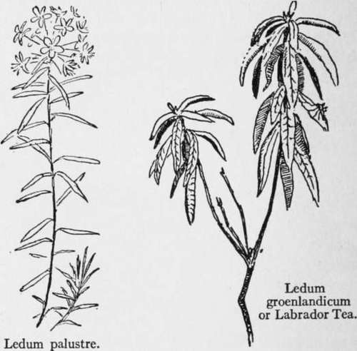

Starvation Foods In The Northern Woods. Continued
Description
This section is from the book "The Book Of Woodcraft", by Ernest Thompson Seton. Also available from Amazon: The Book of Woodcraft.
Starvation Foods In The Northern Woods. Continued
But the hardest case of all is the best for present discussion. That is the case of the man who has not happened on a rabbit region and who has neither gun nor axe, string nor rawhide. He must look entirely to the vegetable world for sustenance, as do all the northern natives in times of direst famine.
Bark And Buds
In the forest region are several foods that are available in the depth of winter. First of these is the thin green outer skin or bark, the white innermost bark, and the buds (not the middle brown bark) of quaking asp or white poplar. The brown bark is highly charged with a bitter principle, partly tannin, that makes it unpalatable as well as unwholesome. Aspen bark is a favorite food with elk, deer, beavers, squirrels, rabbits, and mice in winter. I found that by boiling it for some hours it is reduced to a gelatinous and apparently nutritious mass. I have also found the buds of basswood a palatable food supply. In my early days, in the backwood of Canada, we children frequently allayed our hunger with basswood buds and spruce and tamarac shoots.
Dr. C. C. Curtis informs me that in British Columbia the natives eat the inner bark of willows, hemlock, and other trees, and I have often heard of the Indians eating the innermost bark of birch.
All these are common foods with herbivorous animals. Man, having a less capable stomach, will do well to pre-digest such by roasting or long boiling.
Toadstools
There is yet another supply that is commonly shunned, namely-toadstools. No toadstool growing on trees is known to be poisonous, and most contain nutriment - especially the birch polyporus, which grows on birch trees and has pores instead of gills. A toadstool gnawed by mice or squirrels is usually good. References to the article on toadstools will show that none but the Amanitas are deadly, and these are well known by their white or yellow gills, their parasol shape, the ring on their upper stem, and the cup out of which they spring. They grow on the ground in the woods.
Lichens
But the surest food supply of all is that from the lowly lichens, which exist in enormous quantities throughout the great land of big hunger and little sticks. Doctor C. C. Curtis says:
"All lichens are rich in carbohydrates; lichen starch or lichenin, constituting 40 to 60 per cent, of the bulk of the higher forms".
They supply winter food to all the northern quadrupeds. The reindeer, the white hare, the musk-ox, and the lemming find in them their chief support; and those which do not live directly on the lichen do so indirectly by preying on those who do.
They are not choice dainties for human food. But Richardson, the famous northern naturalist, and the party with him, as well as unnumbered Eskimos and travelers, have lived for weeks on the lichens when other food has failed.
The kinds most useful are the Iceland moss (Cetraria icelandica), the reindeer moss (Cladonia rangijerina), and the rock-tripe or famine-food (Umbilicaria arctica), and other species. To these we might add the Lucanora esculenta or manna lichen, the manna of the Bible; but as this is an old-world species it is not within the intended scope of this article.
The Iceland moss is a rigid, erect, branching moss, almost like a seaweed, and of brown color. It abounds in most northern latitudes. Richardson speaks of the Barren Grounds being covered with Cetraria of two species. When boiled for an hour, it is highly nutritious. Those who wish to familiarize themselves with its appearance as a preliminary of northern travel can see it in most drug shops.
The reindeer moss is by far the most abundant of the food lichens. There are thousands of square miles in the barren northern country, deeply covered with reindeer moss. It is indeed the most abundant form of vegetable life, the main support of the reindeer, and the ever-present and obvious guarantee to the traveler that he need not starve. It is readily known by its soft gray-green color and its branching like a little tree without leaves. It grows on rocks or on the ground, and masses sometimes like sponges. It is said to be a nutritious food. It is gritty unless collected carefully and washed. This latter, fortunately, is easily done, for grit sinks in the water and the moss floats when fresh.
Boiling is the usual way of cooking it. Reindeer moss from Connecticut, however, I boiled for several hours without producing any evident change. It continued to be tough and unpalatable, and tasteless except for a slight suggestion of fish oil.
Roasting was more successful than boiling. When carefully browned, I found it tasted not unlike burnt bread crumbs, and, of course, was easily chewed. While roasting it gave off a smell, like seaweed.

Rock-Tripe
But the last, the rock-tripe or famine-food of the Indians, has proved the most satisfactory of all the starvation foods that I have experimented with. Every one knows it as the flat leathery crinkle-edged lichen that grows on rocks. It is blackish and brittle in dry weather, but dull dark greenish on the upper side in wet. It is largely composed of nutritious matter that can be assimilated by the human stomach. Unfortunately it is also a powerful purge, unless dried before being boiled, as food. Specimens gathered from the rocks in Connecticut - it is very widely distributed even in New England - after drying and two or three hours boiling, produced a thick mucilaginous liquid and a granular mass of solid jelly, that were mild and pleasant to the taste, entirely without the bitterness of Cetraria, etc. Indeed, it was sweetish, with a slight flavor of licorice and of sago, far from unpalatable at any time, and to a starving man, no doubt, a boon from heaven. It is less abundant in the north country than the reindeer moss, but yet of general distribution and to be found in great quantities and at all seasons of the year.
Rock-tripes.
Rock-tripe is the food that saved the life of Sir John Franklin and Dr. J. Richardson on their long and desperate journey for three months, in the summer and autumn of 1821, on foot from Fort Enterprise to the Polar Sea and back. The record of that expedition shows that when they were out of game, as soon happened, their diet was varied with burnt bones when they could find them and toasted leather and hide; but the staple and mainstay was rock-tripe. It is not delicious food, nor is it highly nutritious, but it will sustain life, and every traveler should know what it is like and how to use it.
Drinks
It will be a fitting conclusion to this question of foods if we note one or two possible drinks. Franklin and Richardson used Labrador tea as a hot drink. This is an infusion of the plants figured here. But good and slightly nourishing drinks are made also of the buds, sprouts, or inner bark of spruce, basswood, tamarac, birch, and especially of slippery elm.
Continue to:
Tags
bookdome.com, books, online, free, old, antique, new, read, browse, download